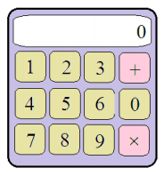

On a calculator keypad, there are the numbers from 0 to 9 and signs of two actions $($see the figure$)$. First, the display shows the number 0. You can press any keys. The calculator performs the actions in the sequence of clicks. If the action sign is pressed several times, the calculator will only remember the last click.
a) The button with the multiplier sign breaks and does not work. The Scattered Scientist pressed several buttons in a random sequence. Which result of the resulting sequence of actions is more likely: an even number or an odd number?
b) Solve the previous problem if the multiplication symbol button is repaired.

a) Denote by A the event "the result will be odd". Suppose that the penultimate number is odd with probability p. Then the result will remain odd, only if you add an even number. Hence, the conditional probability of an odd result is p ½ .
The penultimate number was even with a probability of 1 - p. The result will be odd only if the last term is odd. Hence, in this case the conditional probability of the event A is $(1 - p) \times ½$.
Adding the probabilities of these independent events, we obtain: P $($A$)$ = ½
b) We will say that the Scientist has carried out n steps if he has typed n numbers, and between them, n - 1 times performed some arithmetic operations. We denote by $p_n$ the probability that after n steps there will be an odd number on the calculator screen. Then $p_{n + 1} = ¼ + ¼ p_n$ $($see problem number 65336$)$. Hence, it is clear that if $p_n ≤ ½$, then $p_{n + 1}$ $<$ ½. Since, obviously, $p_1$ = ½, then $p_n$ $<$ ½ for n $>$ 1.
a) Both actions are equally probable; b) the probability of an even number is greater.
As shown in Problem 65336, with a large number of actions, the probability $p_n$ is close to 1/3.